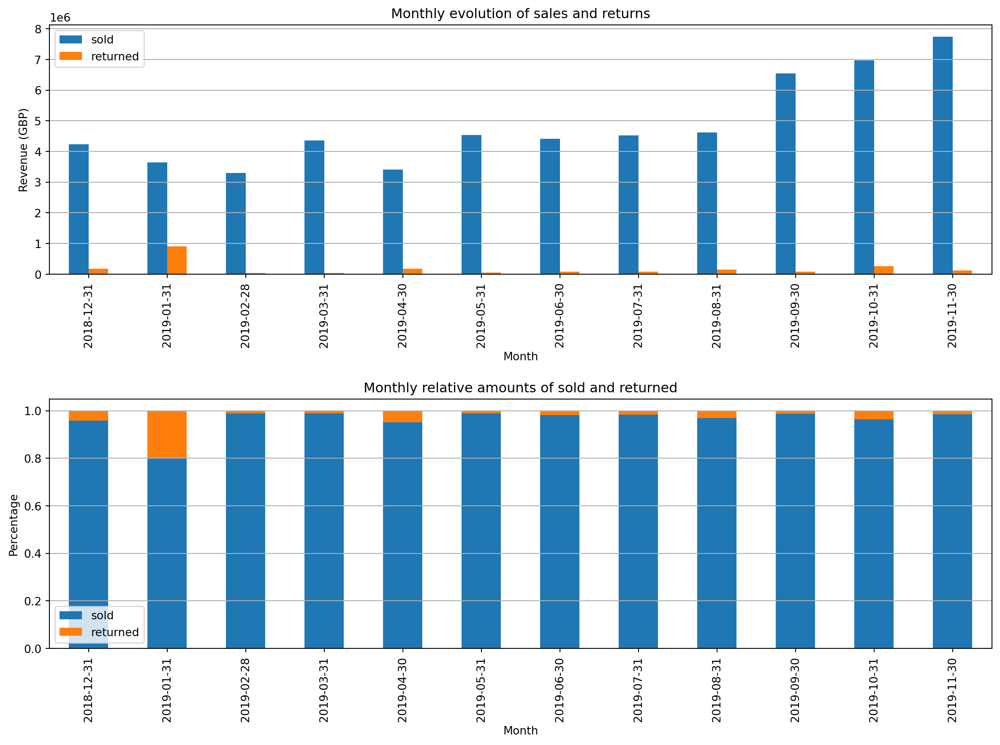
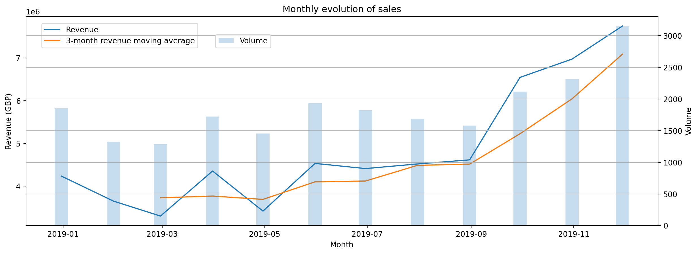
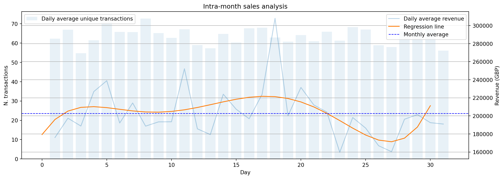
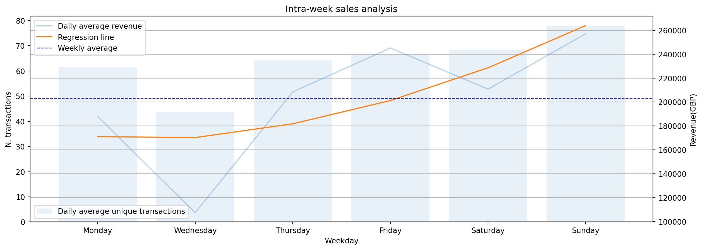
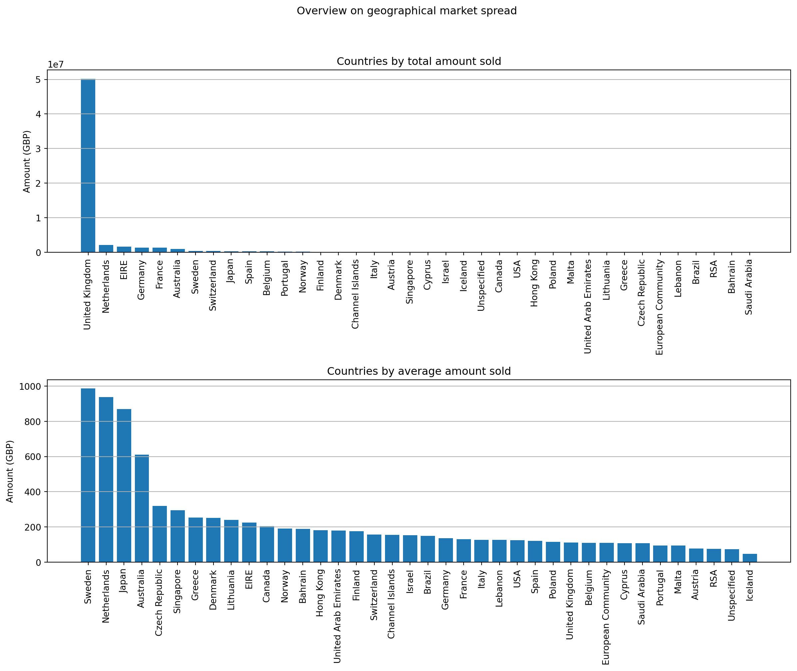
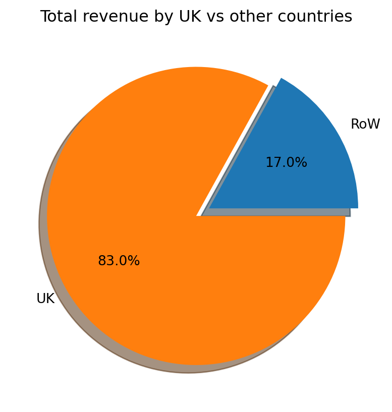
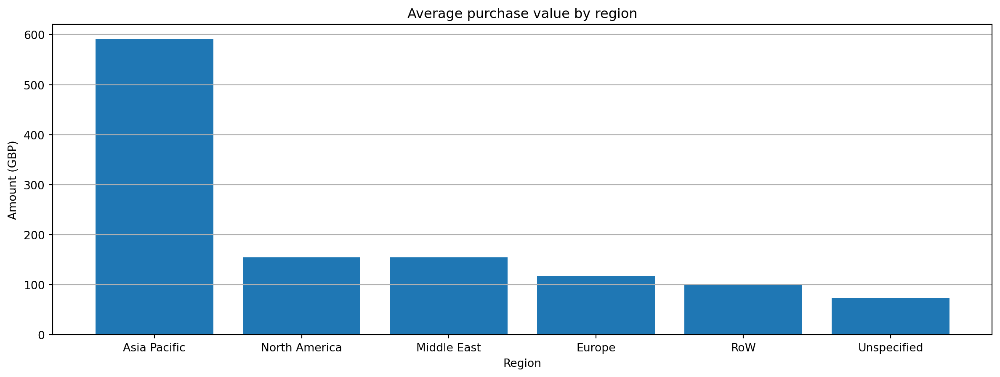
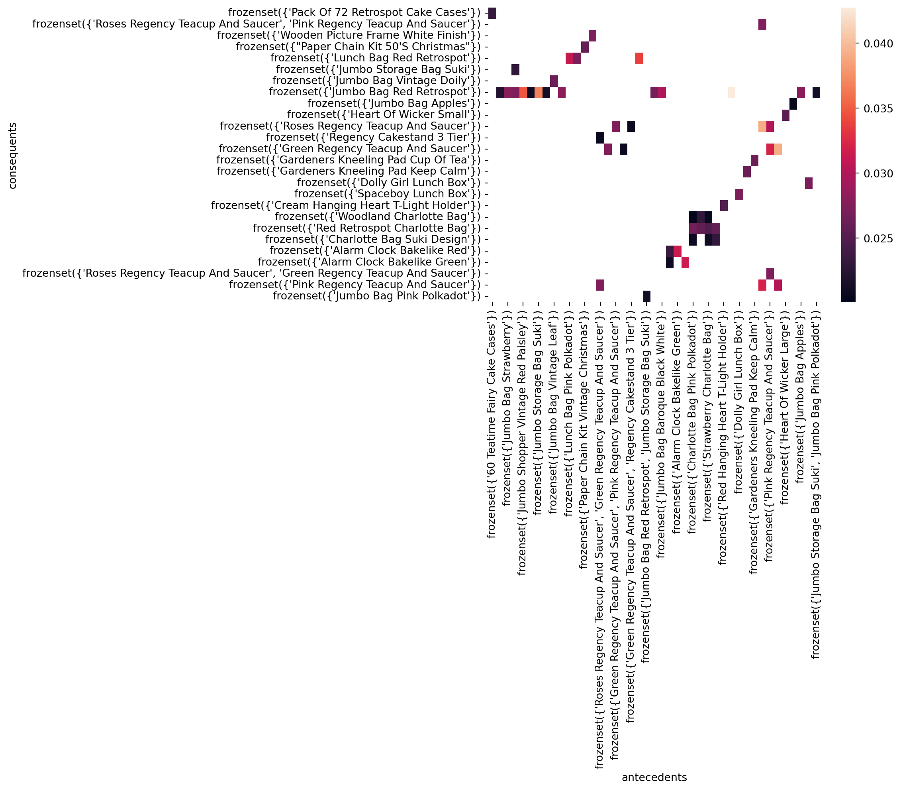
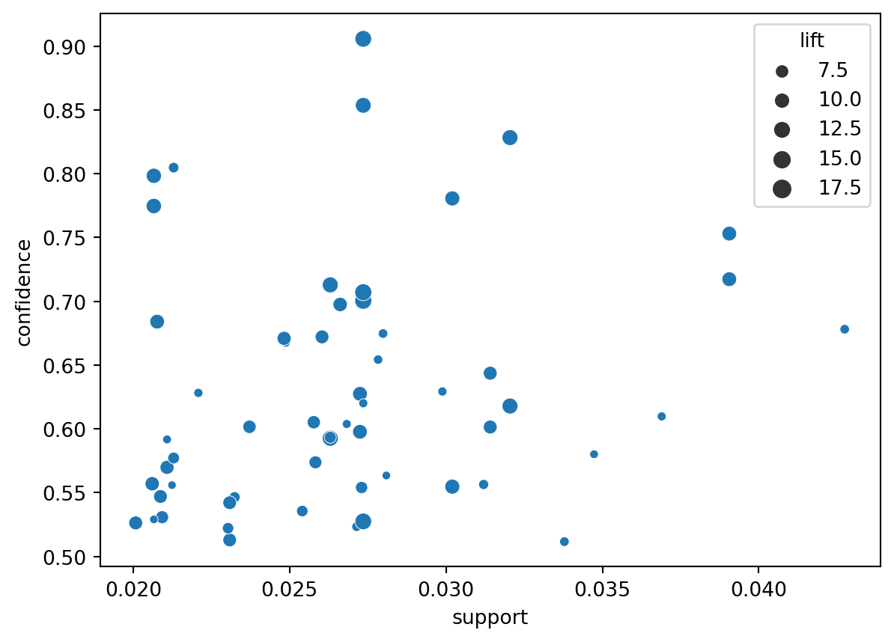

# %pip install pandas statsmodels mlxtend jupyterthemesData: exploration & transformation
The e-commerce industry has experienced significant growth in recent years, and online sales have become an increasingly important aspect of many businesses. Analyzing sales data can help businesses understand customer behavior and identify trends, which can then be used to improve their overall sales strategies. In this notebook, we will be analyzing a sales dataset from an e-commerce company to gain insights into their sales patterns. Our analysis will cover various aspects of the data, including temporal trends and customer geographical segmentation. We will also be performing a market basket analysis to identify relationships between products and suggest strategies for improving sales. By the end of this notebook, we aim to provide a comprehensive understanding of the sales data, which can then be used to make informed decisions and drive business growth.
::: {.cell ExecuteTime=‘{“end_time”:“2023-04-02T18:30:33.449961Z”,“start_time”:“2023-04-02T18:30:32.875508Z”}’ _cell_guid=‘b1076dfc-b9ad-4769-8c92-a6c4dae69d19’ _uuid=‘8f2839f25d086af736a60e9eeb907d3b93b6e0e5’ execution_count=2}
# dataframes
import numpy as np
import pandas as pd
# dataviz
import matplotlib.pyplot as plt
import seaborn as sns
# from jupyterthemes import jtplot
# jtplot.style(theme='monokai', context='notebook', grid=False)
# hypothesis testing
from scipy.stats import ttest_ind
from scipy.stats import f_oneway
from statsmodels.stats.multicomp import pairwise_tukeyhsd
# market basket analysis
from itertools import permutations
from mlxtend.preprocessing import TransactionEncoder
from mlxtend.frequent_patterns import apriori, association_rules:::
Before diving into any analysis, it is essential to explore and transform the data to ensure its quality, completeness, and correctness. In this chapter, we will be exploring and transforming the e-commerce sales dataset to prepare it for our analysis. Our primary goal will be to check for data integrity, handle missing values, and ensure that all variables are in the correct format. We will also be creating new variables that will be useful in our analysis. This chapter will provide a foundation for the rest of our analysis, and the data exploration and transformation techniques used here will be applicable in many other scenarios. By the end of this chapter, we will have a cleaned and prepared dataset ready for our analysis, allowing us to focus on extracting meaningful insights.
df = pd.read_csv('sales.csv')
df.info()<class 'pandas.core.frame.DataFrame'>
RangeIndex: 536350 entries, 0 to 536349
Data columns (total 8 columns):
# Column Non-Null Count Dtype
--- ------ -------------- -----
0 TransactionNo 536350 non-null object
1 Date 536350 non-null object
2 ProductNo 536350 non-null object
3 ProductName 536350 non-null object
4 Price 536350 non-null float64
5 Quantity 536350 non-null int64
6 CustomerNo 536295 non-null float64
7 Country 536350 non-null object
dtypes: float64(2), int64(1), object(5)
memory usage: 32.7+ MBdf| TransactionNo | Date | ProductNo | ProductName | Price | Quantity | CustomerNo | Country | |
|---|---|---|---|---|---|---|---|---|
| 0 | 581482 | 12/9/2019 | 22485 | Set Of 2 Wooden Market Crates | 21.47 | 12 | 17490.0 | United Kingdom |
| 1 | 581475 | 12/9/2019 | 22596 | Christmas Star Wish List Chalkboard | 10.65 | 36 | 13069.0 | United Kingdom |
| 2 | 581475 | 12/9/2019 | 23235 | Storage Tin Vintage Leaf | 11.53 | 12 | 13069.0 | United Kingdom |
| 3 | 581475 | 12/9/2019 | 23272 | Tree T-Light Holder Willie Winkie | 10.65 | 12 | 13069.0 | United Kingdom |
| 4 | 581475 | 12/9/2019 | 23239 | Set Of 4 Knick Knack Tins Poppies | 11.94 | 6 | 13069.0 | United Kingdom |
| ... | ... | ... | ... | ... | ... | ... | ... | ... |
| 536345 | C536548 | 12/1/2018 | 22168 | Organiser Wood Antique White | 18.96 | -2 | 12472.0 | Germany |
| 536346 | C536548 | 12/1/2018 | 21218 | Red Spotty Biscuit Tin | 14.09 | -3 | 12472.0 | Germany |
| 536347 | C536548 | 12/1/2018 | 20957 | Porcelain Hanging Bell Small | 11.74 | -1 | 12472.0 | Germany |
| 536348 | C536548 | 12/1/2018 | 22580 | Advent Calendar Gingham Sack | 16.35 | -4 | 12472.0 | Germany |
| 536349 | C536548 | 12/1/2018 | 22767 | Triple Photo Frame Cornice | 20.45 | -2 | 12472.0 | Germany |
536350 rows × 8 columns
Here above, a glimpse of the data at our disposal. The dataset is composed by the following original variables:
- TransactionNo (categorical): a six-digit unique number that defines each transaction. The letter “C” in the code indicates a cancellation.
- Date (numeric): the date when each transaction was generated.
- ProductNo (categorical): a five or six-digit unique character used to identify a specific product.
- Product (categorical): product/item name.
- Price (numeric): the price of each product per unit in pound sterling (£).
- Quantity (numeric): the quantity of each product per transaction. Negative values related to cancelled transactions.
- CustomerNo (categorical): a five-digit unique number that defines each customer.
- Country (categorical): name of the country where the customer resides.
# Validating variable types
df['Date'] = pd.to_datetime(df['Date'])
df[['ProductNo', 'CustomerNo']] = df[['ProductNo', 'CustomerNo']].astype('object')
# Splitting `Date` column
df['Month'] = df['Date'].dt.month
df['Weekday'] = df['Date'].dt.weekday
df['WeekdayName'] = df['Date'].dt.day_name()
df['Day'] = df['Date'].dt.day
# Creating a `TotalPrice` colum
df['Amount'] = df['Quantity'] * df['Price']Returns
The most notable characteristic of this dataset is the presence of returns, represented by negative values in the Quantity variable. In this section we are going to gain insights on this feature to understand how to deal with it for further analysis.
# We create a boolean variable to identify if a product is returned or not
df['Return'] = np.where(df['Quantity'] < 0, 1, 0)
# Create a boolean variable to show if the product is within a broader order or not
df['SingleOrder'] = df.duplicated('TransactionNo').astype(int)
print(f"Percentage of products sold within a broader order: {1 - sum(df['SingleOrder']) / df.shape[0]}")
# Creating another `TotalPrice` column that takes into consideration returns (represented by -n values in the `Quantity` column).
df['AmountN'] = np.where(df['Amount'] < 0, 0, df['Amount'])Percentage of products sold within a broader order: 0.043262794816817385Do returned products (return-labelled observations) come in specific transactions or are they mixed with non-returned products?
transactionReturned = df.loc[df['Return'] == 1, 'TransactionNo']
df[(df['Return'] == 0) & (df['TransactionNo'].isin(transactionReturned))]| TransactionNo | Date | ProductNo | ProductName | Price | Quantity | CustomerNo | Country | Month | Weekday | WeekdayName | Day | Amount | Return | SingleOrder | AmountN |
|---|
Returned products have specific transaction IDs (TransactionNo).
Do all returned-labelled observations begin with the letter ‘C’?
np.all(np.char.startswith(transactionReturned.unique().astype(str), 'C'))TrueComparing the total number of observations in which TransactionNo starts with ‘C’ with the total number of observations that have been precedently labelled as “returns”:
return2 = np.where(df['TransactionNo'].str.startswith('C'), 1, 0)
print(df['Return'].sum())
print(return2.sum())8585
8585transno_c = df[df['TransactionNo'].str.slice(0, 1) == 'C']['TransactionNo'].str.slice(1)
df[df['TransactionNo'].isin(transno_c)]| TransactionNo | Date | ProductNo | ProductName | Price | Quantity | CustomerNo | Country | Month | Weekday | WeekdayName | Day | Amount | Return | SingleOrder | AmountN |
|---|
Transaction IDs for returned products are different from the IDs of non-returned products, and they begin with letter ‘C’.
Missing values
(df.isnull().sum() / df.shape[0]).sort_values(ascending=False)CustomerNo 0.000103
TransactionNo 0.000000
Date 0.000000
ProductNo 0.000000
ProductName 0.000000
Price 0.000000
Quantity 0.000000
Country 0.000000
Month 0.000000
Weekday 0.000000
WeekdayName 0.000000
Day 0.000000
Amount 0.000000
Return 0.000000
SingleOrder 0.000000
AmountN 0.000000
dtype: float64nulls = df[df['CustomerNo'].isnull()]
nulls.head()| TransactionNo | Date | ProductNo | ProductName | Price | Quantity | CustomerNo | Country | Month | Weekday | WeekdayName | Day | Amount | Return | SingleOrder | AmountN | |
|---|---|---|---|---|---|---|---|---|---|---|---|---|---|---|---|---|
| 6511 | C581406 | 2019-12-08 | 46000M | Polyester Filler Pad 45x45cm | 6.19 | -240 | NaN | United Kingdom | 12 | 6 | Sunday | 8 | -1485.60 | 1 | 0 | 0.0 |
| 6512 | C581406 | 2019-12-08 | 46000S | Polyester Filler Pad 40x40cm | 6.19 | -300 | NaN | United Kingdom | 12 | 6 | Sunday | 8 | -1857.00 | 1 | 1 | 0.0 |
| 90098 | C575153 | 2019-11-08 | 22947 | Wooden Advent Calendar Red | 44.25 | -1 | NaN | United Kingdom | 11 | 4 | Friday | 8 | -44.25 | 1 | 0 | 0.0 |
| 102671 | C574288 | 2019-11-03 | 22178 | Victorian Glass Hanging T-Light | 25.37 | -1 | NaN | United Kingdom | 11 | 6 | Sunday | 3 | -25.37 | 1 | 0 | 0.0 |
| 117263 | C573180 | 2019-10-28 | 23048 | Set Of 10 Lanterns Fairy Light Star | 14.50 | -1 | NaN | United Kingdom | 10 | 0 | Monday | 28 | -14.50 | 1 | 0 | 0.0 |
nulls['Return'].value_counts()Return
1 54
0 1
Name: count, dtype: int64Only CustomerNo variable has null values. They are most probably due to mistakes in data collection.
Sales analysis
We will now be analyzing online sales data from a one-year period spanning from 2018-12-01 to 2019-11-30. The first type of analysis will focus on the temporal aspect of the data. This analysis aims to understand the sales evolution over time, as well as identify trends within months and weeks. The second type of analysis will center around examining the regional spread of sales in order to evaluate the existing market segmentation and gain insights into potential opportunities.
# Subsetting for one exact year
df = df[df['Date'] <= '2019-11-30']Monthly evolution
month_evo = df.groupby(pd.Grouper(key='Date', freq='M')).agg(
sold=('Amount','sum'), returned=('Amount', lambda x: sum(x[x < 0])),
nunique=('TransactionNo', 'nunique'))
month_evo['sold_moving_avg'] = month_evo['sold'].rolling(window=3).mean()
month_evo['returned'] = month_evo['returned'].abs()
month_evo.index = month_evo.index.date
month_evo| sold | returned | nunique | sold_moving_avg | |
|---|---|---|---|---|
| 2018-12-31 | 4234147.48 | 181268.04 | 1852 | NaN |
| 2019-01-31 | 3649506.42 | 910349.95 | 1327 | NaN |
| 2019-02-28 | 3299537.56 | 35479.62 | 1287 | 3.727730e+06 |
| 2019-03-31 | 4353308.78 | 45092.82 | 1722 | 3.767451e+06 |
| 2019-04-30 | 3416109.24 | 173388.64 | 1455 | 3.689652e+06 |
| 2019-05-31 | 4530850.36 | 48114.72 | 1938 | 4.100089e+06 |
| 2019-06-30 | 4410422.29 | 84308.52 | 1826 | 4.119127e+06 |
| 2019-07-31 | 4518347.92 | 75519.14 | 1687 | 4.486540e+06 |
| 2019-08-31 | 4614243.55 | 144112.47 | 1581 | 4.514338e+06 |
| 2019-09-30 | 6542706.30 | 85596.76 | 2117 | 5.225099e+06 |
| 2019-10-31 | 6971407.82 | 266009.54 | 2312 | 6.042786e+06 |
| 2019-11-30 | 7745257.92 | 115939.20 | 3146 | 7.086457e+06 |
month_evo_sum = month_evo[['sold', 'returned']].sum(axis=1)
month_evo_pct = month_evo[['sold', 'returned']].div(month_evo_sum, axis=0)fig, ax = plt.subplots(2, 1, figsize=(15,10))
month_evo[['sold', 'returned']].plot.bar(ax=ax[0])
ax[0].set_ylabel('Revenue (GBP)')
ax[0].set_xlabel('Month')
ax[0].set_title("Monthly evolution of sales and returns")
ax[0].grid(axis='y')
month_evo_pct.plot.bar(stacked=True, ax=ax[1])
ax[1].set_ylabel('Percentage')
ax[1].set_xlabel('Month')
ax[1].set_title("Monthly relative amounts of sold and returned")
ax[1].grid(axis='y')
plt.subplots_adjust(hspace=0.5)
plt.show()
fig, ax1 = plt.subplots(figsize=(15,5))
ax2 = plt.twinx()
ax1.plot(month_evo.index, month_evo['sold'], label='Revenue')
ax1.plot(month_evo.index, month_evo['sold_moving_avg'], label='3-month revenue moving average')
ax2.bar(month_evo.index, month_evo['nunique'], width=8, label='Volume', alpha=0.25)
ax1.set_ylabel('Revenue (GBP)')
ax2.set_ylabel('Volume')
ax1.set_xlabel('Month')
plt.title("Monthly evolution of sales")
plt.grid(True)
ax1.legend(loc=(0.025,0.85))
ax2.legend(loc=(0.3,0.85))
plt.show()
Intra-month analysis
df = df[df['Quantity'] > 0]
bydate = df.groupby('Date').agg(
UniqueTransactions=('TransactionNo', 'nunique'),
UniqueProdSold=('TransactionNo', 'count'),
ProdSold=('Quantity', 'sum'),
Revenue=('Amount', 'sum')
).reset_index()
bydate['Day'] = bydate['Date'].dt.day
bydate['Weekday'] = bydate['Date'].dt.weekday
bydate['Month'] = bydate['Date'].dt.month
bydate['WeekdayName'] = bydate['Date'].dt.day_name()
bydate| Date | UniqueTransactions | UniqueProdSold | ProdSold | Revenue | Day | Weekday | Month | WeekdayName | |
|---|---|---|---|---|---|---|---|---|---|
| 0 | 2018-12-01 | 127 | 3061 | 26889 | 326820.08 | 1 | 5 | 12 | Saturday |
| 1 | 2018-12-02 | 141 | 2057 | 31297 | 367316.62 | 2 | 6 | 12 | Sunday |
| 2 | 2018-12-03 | 68 | 2136 | 16164 | 206313.62 | 3 | 0 | 12 | Monday |
| 3 | 2018-12-05 | 88 | 2694 | 16357 | 197565.27 | 5 | 2 | 12 | Wednesday |
| 4 | 2018-12-06 | 103 | 3823 | 21867 | 273420.10 | 6 | 3 | 12 | Thursday |
| ... | ... | ... | ... | ... | ... | ... | ... | ... | ... |
| 292 | 2019-11-25 | 84 | 3073 | 31504 | 197883.43 | 25 | 0 | 11 | Monday |
| 293 | 2019-11-27 | 57 | 2529 | 11151 | 71166.89 | 27 | 2 | 11 | Wednesday |
| 294 | 2019-11-28 | 114 | 3293 | 29440 | 190534.34 | 28 | 3 | 11 | Thursday |
| 295 | 2019-11-29 | 135 | 4275 | 30872 | 200962.48 | 29 | 4 | 11 | Friday |
| 296 | 2019-11-30 | 108 | 3337 | 28369 | 182968.22 | 30 | 5 | 11 | Saturday |
297 rows × 9 columns
byday = bydate.groupby('Day')[['UniqueTransactions', 'UniqueProdSold', 'ProdSold', 'Revenue']].mean()
byday.columns = ['DailyAvgUniqueTransactions', 'DailyAvgUniqueProdSold', 'DailyAvgProdSold', 'DailyAvgRev']
byday = byday.sort_index()
byday.head()| DailyAvgUniqueTransactions | DailyAvgUniqueProdSold | DailyAvgProdSold | DailyAvgRev | |
|---|---|---|---|---|
| Day | ||||
| 1 | 62.200 | 1425.600000 | 15170.000000 | 176053.439000 |
| 2 | 66.875 | 1685.625000 | 16904.750000 | 197402.811250 |
| 3 | 54.700 | 1410.100000 | 15707.800000 | 188742.753000 |
| 4 | 61.400 | 1713.100000 | 19456.500000 | 226897.317000 |
| 5 | 71.000 | 1815.111111 | 20756.666667 | 238868.772222 |
rev_coefficients = np.polyfit(byday.index.values, byday['DailyAvgRev'].values, 5)
rev_regression_line = np.poly1d(rev_coefficients)
fig, ax1 = plt.subplots(figsize=(15,5))
ax2 = plt.twinx()
ax2.plot(byday.index, byday['DailyAvgRev'], label='Daily average revenue', alpha=0.3)
ax1.bar(byday.index, byday['DailyAvgUniqueTransactions'], label='Daily average unique transactions', alpha=0.1)
ax2.plot(rev_regression_line(byday.index.values), label='Regression line')
ax2.axhline(byday['DailyAvgRev'].mean(), color='b', linestyle='dashed', linewidth=1, label='Monthly average')
ax1.set_ylabel('N. transactions')
ax2.set_ylabel('Revenue (GBP)')
plt.title("Intra-month sales analysis")
plt.grid(True)
ax1.legend(loc='upper left')
ax1.set_xlabel('Day')
ax2.legend()
plt.show()
By analyzing the revenue data within a month, we can observe that the daily average revenue varies throughout the month. The revenue reaches its peak at around three-quarters of the month and dips to its lowest point just before the end of the month. However, it starts to increase again just before the last few days. The dip in revenue just before the end of the month is considered normal as it coincides with the time when people typically receive their salaries.
Intra-week analysis
byweekday = bydate.groupby(['Weekday', 'WeekdayName'])[['UniqueTransactions', 'UniqueProdSold', 'ProdSold', 'Revenue']].mean()
byweekday.columns = ['DailyAvgUniqueTransactions', 'DailyAvgUniqueProdSold', 'DailyAvgProdSold', 'DailyAvgRev']
byweekday = byweekday.reset_index().set_index('Weekday')
byweekday.index = byweekday.index + 1
byweekday| WeekdayName | DailyAvgUniqueTransactions | DailyAvgUniqueProdSold | DailyAvgProdSold | DailyAvgRev | |
|---|---|---|---|---|---|
| Weekday | |||||
| 1 | Monday | 61.416667 | 1570.854167 | 16290.958333 | 187875.265208 |
| 3 | Wednesday | 43.612245 | 1259.551020 | 9342.183673 | 107400.393061 |
| 4 | Thursday | 64.217391 | 1900.000000 | 17979.391304 | 208483.595435 |
| 5 | Friday | 66.705882 | 1879.764706 | 21235.274510 | 245216.874706 |
| 6 | Saturday | 68.500000 | 1721.365385 | 18900.384615 | 210759.228077 |
| 7 | Sunday | 77.843137 | 1820.686275 | 22464.431373 | 257149.160980 |
rev_coefficients = np.polyfit(byweekday.index.values, byweekday['DailyAvgRev'].values, 2)
rev_regression_line = np.poly1d(rev_coefficients)
fig, ax1 = plt.subplots(figsize=(15,5))
ax2 = plt.twinx()
ax2.plot(byweekday['WeekdayName'], byweekday['DailyAvgRev'], label='Daily average revenue', alpha=0.3)
ax1.bar(byweekday['WeekdayName'], byweekday['DailyAvgUniqueTransactions'], label='Daily average unique transactions', alpha=0.1)
ax2.plot(rev_regression_line(byweekday.index.values), label='Regression line')
ax2.axhline(byweekday['DailyAvgRev'].mean(), color='b', linestyle='dashed', linewidth=1, label='Weekly average')
ax1.set_ylabel('N. transactions')
ax2.set_ylabel('Revenue(GBP)')
plt.title("Intra-week sales analysis")
plt.grid(axis='y')
ax1.legend(loc='lower left')
ax1.set_xlabel('Weekday')
ax2.legend()
plt.show()
Similar to the analysis conducted within a month, examining sales patterns within a week can also reveal interesting insights. By looking at the graph above, it becomes evident that the sales volume and revenue significantly increase during the latter part of the week. Specifically, revenue exceeds the weekly average starting from Thursday. On the other hand, Wednesday remains the least profitable day of the week with the lowest sales volume and revenue.
Geographical analysis
When conducting a geographical analysis of sales, it is essential to consider both the average purchase value and sales volume to determine if there are any countries that offer promising opportunities. For instance, a country with a high average purchase value but low sales volume may indicate that it has untapped potential and should be targeted for further penetration. The average purchase value gives an indication of the buying power and willingness of customers to spend money, while sales volume reflects the market demand and potential for growth. A country with a high average purchase value and low sales volume could be a potential opportunity for businesses to capitalize on the untapped market potential by increasing their presence and promoting their products or services more effectively.
# Mapping regions
regions = {'Europe': ['Sweden', 'Denmark', 'Norway', 'Finland', 'Iceland', 'Netherlands', 'Belgium', 'France', 'Germany', 'Switzerland', 'Austria',
'Italy', 'Spain', 'Greece', 'Portugal', 'Malta', 'Cyprus', 'Czech Republic', 'Lithuania', 'Poland', 'United Kingdom', 'EIRE',
'Channel Islands', 'European Community'],
'North America': ['USA', 'Canada'],
'Middle East': ['Bahrain', 'United Arab Emirates', 'Israel', 'Lebanon', 'Saudi Arabia'],
'Asia Pacific': ['Japan', 'Australia', 'Singapore', 'Hong Kong'],
'RoW': ['Brazil', 'RSA'],
'Unspecified': ['Unspecified']}
country_to_region = {}
for region, countries in regions.items():
for country in countries:
country_to_region[country] = region
df['Region'] = df['Country'].map(country_to_region)
df['UKvsRoW'] = np.where(df['Country'] == 'United Kingdom', 'UK', 'RoW')bycountry = df.groupby('Country').agg(
tot_amount=('Amount', 'sum'),
mean_amount=('Amount', 'mean')
).sort_values('tot_amount', ascending=False)
bycountry.head()| tot_amount | mean_amount | |
|---|---|---|
| Country | ||
| United Kingdom | 50192562.28 | 110.502027 |
| Netherlands | 2101104.07 | 937.992888 |
| EIRE | 1687318.68 | 225.607525 |
| Germany | 1346540.40 | 135.494103 |
| France | 1306661.68 | 129.564867 |
fig, ax = plt.subplots(2, figsize=(15,10))
ax[0].bar(bycountry.index, bycountry['tot_amount'])
ax[1].bar(bycountry.sort_values('mean_amount', ascending=False).index, bycountry.sort_values('mean_amount', ascending=False)['mean_amount'])
plt.setp(ax, xticks=bycountry.index, xticklabels=bycountry.index)
plt.setp(ax[0].get_xticklabels(), rotation=90, ha="center")
plt.setp(ax[1].get_xticklabels(), rotation=90, ha="center")
ax[0].set_ylabel("Amount (GBP)")
ax[1].set_ylabel("Amount (GBP)")
ax[0].set_title("Countries by total amount sold")
ax[1].set_title("Countries by average amount sold")
plt.suptitle("Overview on geographical market spread")
ax[0].grid(axis='y')
ax[1].grid(axis='y')
plt.subplots_adjust(hspace=0.7)
plt.show()
byukvsrow = df.groupby('UKvsRoW').agg(
tot_amount=('Amount', 'sum'),
mean_amount=('Amount', 'mean'),
n_inv=('TransactionNo', 'nunique'),
quantity=('Quantity', 'mean')
).sort_values('mean_amount', ascending=False)
byukvsrow| tot_amount | mean_amount | n_inv | quantity | |
|---|---|---|---|---|
| UKvsRoW | ||||
| RoW | 10258462.78 | 211.383944 | 1809 | 18.478900 |
| UK | 50192562.28 | 110.502027 | 17164 | 9.646163 |
plt.pie(byukvsrow['tot_amount'], labels=byukvsrow.index, autopct='%1.1f%%', explode=(0.1,0), shadow=True)
plt.title('Total revenue by UK vs other countries')
plt.show()
row_rev = df.loc[df['UKvsRoW'] == 'RoW', 'Amount']
uk_rev = df.loc[df['UKvsRoW'] == 'UK', 'Amount']
ttest_ind(uk_rev, row_rev)Ttest_indResult(statistic=-16.7279858606087, pvalue=8.524026769071223e-63)Even though the volume of sales of international customers accounts only for the 17.0%, the average revenue generated abroad is significantly higher than the one generated in the UK. This means that international markets for this business are potentially more lucrative than the national one and need to be exploited more.
byregion = df.groupby('Region').agg(
tot_amount=('Amount', 'sum'),
mean_amount=('Amount', 'mean'),
n_inv=('TransactionNo', 'nunique'),
quantity=('Quantity', 'mean')
).sort_values('mean_amount', ascending=False)
byregion.sort_values('mean_amount', ascending=False)| tot_amount | mean_amount | n_inv | quantity | |
|---|---|---|---|---|
| Region | ||||
| Asia Pacific | 1380079.80 | 590.787586 | 92 | 51.083904 |
| North America | 59633.28 | 154.891636 | 11 | 13.503896 |
| Middle East | 76798.30 | 154.835282 | 16 | 12.661290 |
| Europe | 58892902.53 | 118.021612 | 18839 | 10.308538 |
| RoW | 8912.10 | 101.273864 | 2 | 8.000000 |
| Unspecified | 32699.05 | 73.152237 | 13 | 6.272931 |
fig, ax1 = plt.subplots(figsize=(15,5))
ax1 = plt.bar(byregion.index, byregion['mean_amount'])
plt.title("Average purchase value by region")
plt.ylabel('Amount (GBP)')
plt.xlabel('Region')
plt.grid(axis='y')
plt.show()
f_value, p_value = f_oneway(df.loc[df['Region'] == 'Asia Pacific', 'Amount'],
df.loc[df['Region'] == 'North America', 'Amount'],
df.loc[df['Region'] == 'Middle East', 'Amount'],
df.loc[df['Region'] == 'Europe', 'Amount'],
df.loc[df['Region'] == 'RoW', 'Amount'])
print(f'ANOVA F-value: {f_value:.2f}')
print(f'ANOVA p-value: {p_value:.4f}')
tukey_df = df.filter(items=['Amount', 'Region']).dropna()
print(pairwise_tukeyhsd(tukey_df['Amount'], tukey_df['Region']))ANOVA F-value: 81.58
ANOVA p-value: 0.0000
Multiple Comparison of Means - Tukey HSD, FWER=0.05
=======================================================================
group1 group2 meandiff p-adj lower upper reject
-----------------------------------------------------------------------
Asia Pacific Europe -472.766 0.0 -547.3921 -398.1398 True
Asia Pacific Middle East -435.9523 0.0 -613.855 -258.0496 True
Asia Pacific North America -435.8959 0.0 -633.8256 -237.9663 True
Asia Pacific RoW -489.5137 0.0048 -880.2663 -98.7612 True
Asia Pacific Unspecified -517.6353 0.0 -703.4071 -331.8636 True
Europe Middle East 36.8137 0.9872 -124.841 198.4683 False
Europe North America 36.87 0.9928 -146.5938 220.3338 False
Europe RoW -16.7477 1.0 -400.3757 366.8802 False
Europe Unspecified -44.8694 0.9754 -215.1456 125.4068 False
Middle East North America 0.0564 1.0 -244.3599 244.4726 False
Middle East RoW -53.5614 0.9991 -469.7954 362.6726 False
Middle East Unspecified -81.683 0.9207 -316.3622 152.9961 False
North America RoW -53.6178 0.9992 -478.7971 371.5616 False
North America Unspecified -81.7394 0.9386 -331.9414 168.4626 False
RoW Unspecified -28.1216 1.0 -447.7792 391.536 False
-----------------------------------------------------------------------We can observe from both the bar plot and the ANOVA analysis that the mean purchase value in the Asia/Pacific region is consistently and significantly higher than the mean purchase value in the other regions. Based on this important information, we can infer that the Asia/Pacific region is a potentially lucrative market with higher average purchase amounts than the other regions. Therefore, the store may want to consider investing more resources in this region to take advantage of this opportunity to increase volume of sales. The business can consider implementing targeted marketing strategies, such as advertising campaigns and promotions, that cater to the preferences and interests of the Asia/Pacific market. Additionally, it can explore expanding its product offerings to meet the specific demands of this region, or enhancing the quality of existing products to meet their higher standards. It may be useful to conduct further research and analysis to gain deeper insights into the preferences and behavior of customers in the Asia/Pacific region, and tailor sales strategies accordingly.
Market basket analysis for the Asian market
Market basket analysis is a powerful technique in the field of data mining and business analytics that has gained significant attention in recent years. It enables businesses to understand the relationships between products and customer behavior, helping them make informed decisions about their product offerings, promotions, and pricing strategies. The technique is widely used in industries such as retail, e-commerce, and marketing, where understanding customer purchasing patterns is crucial for improving sales and profitability.
In market basket analysis, association rules play a central role as they describe the relationships between sets of items using if-then statements. For instance, an association rule like {razor} {shaving cream} can be interpreted as “if razor, then shaving cream,” where razor is the antecedent and shaving cream is the consequent. It is worth noting that many rules have multiple antecedents and consequents. To begin with, the first step of a market basket analysis involves extracting a unique dataframe of products and then elaborating on the association rules.
# Converting transactions in a list of lists
transactions = df.groupby('TransactionNo').apply(lambda x: list(x['ProductName'])).to_list()
encoder = TransactionEncoder().fit(transactions)
onehot = encoder.transform(transactions)
onehot = pd.DataFrame(onehot, columns=encoder.columns_)frequent_itemsets = apriori(onehot,
min_support = 0.02,
max_len = 5,
use_colnames = True)
print('Number of itemsets selected:', len(frequent_itemsets))Number of itemsets selected: 398rules = association_rules(frequent_itemsets, metric='confidence', min_threshold=0.51)
rules['n_antecedents'] = rules['antecedents'].apply(lambda x: len(x))
rules['n_consequents'] = rules['consequents'].apply(lambda x: len(x))
rules.sort_values('confidence', ascending=False)| antecedents | consequents | antecedent support | consequent support | support | confidence | lift | leverage | conviction | n_antecedents | n_consequents | |
|---|---|---|---|---|---|---|---|---|---|---|---|
| 48 | (Roses Regency Teacup And Saucer, Pink Regency... | (Green Regency Teacup And Saucer) | 0.030201 | 0.051863 | 0.027355 | 0.905759 | 17.464399 | 0.025788 | 10.060785 | 2 | 1 |
| 49 | (Green Regency Teacup And Saucer, Pink Regency... | (Roses Regency Teacup And Saucer) | 0.032046 | 0.054446 | 0.027355 | 0.853618 | 15.678318 | 0.025610 | 6.459516 | 2 | 1 |
| 18 | (Pink Regency Teacup And Saucer) | (Green Regency Teacup And Saucer) | 0.038687 | 0.051863 | 0.032046 | 0.828338 | 15.971600 | 0.030039 | 5.523273 | 1 | 1 |
| 56 | (Jumbo Storage Bag Suki, Jumbo Bag Pink Polkadot) | (Jumbo Bag Red Retrospot) | 0.026459 | 0.107469 | 0.021293 | 0.804781 | 7.488527 | 0.018450 | 4.571947 | 2 | 1 |
| 54 | (Green Regency Teacup And Saucer, Regency Cake... | (Roses Regency Teacup And Saucer) | 0.025879 | 0.054446 | 0.020661 | 0.798371 | 14.663588 | 0.019252 | 4.689567 | 2 | 1 |
| 42 | (Pink Regency Teacup And Saucer) | (Roses Regency Teacup And Saucer) | 0.038687 | 0.054446 | 0.030201 | 0.780654 | 14.338187 | 0.028094 | 4.310788 | 1 | 1 |
| 53 | (Roses Regency Teacup And Saucer, Regency Cake... | (Green Regency Teacup And Saucer) | 0.026669 | 0.051863 | 0.020661 | 0.774704 | 14.937450 | 0.019278 | 4.208397 | 2 | 1 |
| 20 | (Green Regency Teacup And Saucer) | (Roses Regency Teacup And Saucer) | 0.051863 | 0.054446 | 0.039055 | 0.753049 | 13.831166 | 0.036232 | 3.828911 | 1 | 1 |
| 19 | (Roses Regency Teacup And Saucer) | (Green Regency Teacup And Saucer) | 0.054446 | 0.051863 | 0.039055 | 0.717328 | 13.831166 | 0.036232 | 3.354196 | 1 | 1 |
| 15 | (Gardeners Kneeling Pad Cup Of Tea) | (Gardeners Kneeling Pad Keep Calm) | 0.036895 | 0.044379 | 0.026301 | 0.712857 | 16.062991 | 0.024663 | 3.328034 | 1 | 1 |
| 51 | (Pink Regency Teacup And Saucer) | (Roses Regency Teacup And Saucer, Green Regenc... | 0.038687 | 0.039055 | 0.027355 | 0.707084 | 18.104607 | 0.025844 | 3.280620 | 1 | 2 |
| 47 | (Roses Regency Teacup And Saucer, Green Regenc... | (Pink Regency Teacup And Saucer) | 0.039055 | 0.038687 | 0.027355 | 0.700405 | 18.104607 | 0.025844 | 3.208708 | 2 | 1 |
| 6 | (Charlotte Bag Pink Polkadot) | (Red Retrospot Charlotte Bag) | 0.038159 | 0.052865 | 0.026617 | 0.697514 | 13.194347 | 0.024599 | 3.131169 | 1 | 1 |
| 22 | (Jumbo Bag Pears) | (Jumbo Bag Apples) | 0.030359 | 0.049860 | 0.020766 | 0.684028 | 13.718878 | 0.019253 | 3.007035 | 1 | 1 |
| 25 | (Jumbo Bag Pink Polkadot) | (Jumbo Bag Red Retrospot) | 0.063037 | 0.107469 | 0.042745 | 0.678094 | 6.309696 | 0.035970 | 2.772643 | 1 | 1 |
| 27 | (Jumbo Bag Scandinavian Blue Paisley) | (Jumbo Bag Red Retrospot) | 0.041480 | 0.107469 | 0.027987 | 0.674714 | 6.278249 | 0.023529 | 2.743837 | 1 | 1 |
| 40 | (Paper Chain Kit Vintage Christmas) | (Paper Chain Kit 50'S Christmas) | 0.038739 | 0.055026 | 0.026037 | 0.672109 | 12.214484 | 0.023905 | 2.881976 | 1 | 1 |
| 43 | (Strawberry Charlotte Bag) | (Red Retrospot Charlotte Bag) | 0.037000 | 0.052865 | 0.024825 | 0.670940 | 12.691673 | 0.022869 | 2.878308 | 1 | 1 |
| 12 | (Red Hanging Heart T-Light Holder) | (Cream Hanging Heart T-Light Holder) | 0.037263 | 0.115902 | 0.024877 | 0.667610 | 5.760144 | 0.020559 | 2.659820 | 1 | 1 |
| 29 | (Jumbo Bag Strawberry) | (Jumbo Bag Red Retrospot) | 0.042534 | 0.107469 | 0.027829 | 0.654275 | 6.088063 | 0.023258 | 2.581623 | 1 | 1 |
| 2 | (Alarm Clock Bakelike Green) | (Alarm Clock Bakelike Red) | 0.048806 | 0.052232 | 0.031413 | 0.643629 | 12.322466 | 0.028864 | 2.659494 | 1 | 1 |
| 24 | (Jumbo Bag Baroque Black White) | (Jumbo Bag Red Retrospot) | 0.047489 | 0.107469 | 0.029885 | 0.629301 | 5.855676 | 0.024781 | 2.407697 | 1 | 1 |
| 28 | (Jumbo Bag Spaceboy Design) | (Jumbo Bag Red Retrospot) | 0.035155 | 0.107469 | 0.022084 | 0.628186 | 5.845302 | 0.018306 | 2.400478 | 1 | 1 |
| 13 | (Dolly Girl Lunch Box) | (Spaceboy Lunch Box) | 0.043430 | 0.045591 | 0.027249 | 0.627427 | 13.762053 | 0.025269 | 2.561671 | 1 | 1 |
| 30 | (Jumbo Bag Woodland Animals) | (Jumbo Bag Red Retrospot) | 0.044115 | 0.107469 | 0.027355 | 0.620072 | 5.769799 | 0.022614 | 2.349210 | 1 | 1 |
| 17 | (Green Regency Teacup And Saucer) | (Pink Regency Teacup And Saucer) | 0.051863 | 0.038687 | 0.032046 | 0.617886 | 15.971600 | 0.030039 | 2.515778 | 1 | 1 |
| 33 | (Jumbo Storage Bag Suki) | (Jumbo Bag Red Retrospot) | 0.060507 | 0.107469 | 0.036895 | 0.609756 | 5.673812 | 0.030392 | 2.287112 | 1 | 1 |
| 44 | (Woodland Charlotte Bag) | (Red Retrospot Charlotte Bag) | 0.042587 | 0.052865 | 0.025773 | 0.605198 | 11.448078 | 0.023522 | 2.399014 | 1 | 1 |
| 26 | (Jumbo Bag Pink Vintage Paisley) | (Jumbo Bag Red Retrospot) | 0.044432 | 0.107469 | 0.026828 | 0.603796 | 5.618353 | 0.022053 | 2.252707 | 1 | 1 |
| 4 | (Alarm Clock Bakelike Pink) | (Alarm Clock Bakelike Red) | 0.039424 | 0.052232 | 0.023718 | 0.601604 | 11.517899 | 0.021659 | 2.378961 | 1 | 1 |
| 3 | (Alarm Clock Bakelike Red) | (Alarm Clock Bakelike Green) | 0.052232 | 0.048806 | 0.031413 | 0.601413 | 12.322466 | 0.028864 | 2.386413 | 1 | 1 |
| 14 | (Spaceboy Lunch Box) | (Dolly Girl Lunch Box) | 0.045591 | 0.043430 | 0.027249 | 0.597688 | 13.762053 | 0.025269 | 2.377681 | 1 | 1 |
| 35 | (Jumbo Bag Vintage Leaf) | (Jumbo Bag Vintage Doily) | 0.044326 | 0.062563 | 0.026301 | 0.593341 | 9.483963 | 0.023527 | 2.305219 | 1 | 1 |
| 16 | (Gardeners Kneeling Pad Keep Calm) | (Gardeners Kneeling Pad Cup Of Tea) | 0.044379 | 0.036895 | 0.026301 | 0.592637 | 16.062991 | 0.024663 | 2.364241 | 1 | 1 |
| 32 | (Jumbo Storage Bag Skulls) | (Jumbo Bag Red Retrospot) | 0.035630 | 0.107469 | 0.021083 | 0.591716 | 5.505948 | 0.017254 | 2.186055 | 1 | 1 |
| 31 | (Jumbo Shopper Vintage Red Paisley) | (Jumbo Bag Red Retrospot) | 0.059875 | 0.107469 | 0.034734 | 0.580106 | 5.397913 | 0.028299 | 2.125610 | 1 | 1 |
| 55 | (Jumbo Bag Red Retrospot, Jumbo Storage Bag Suki) | (Jumbo Bag Pink Polkadot) | 0.036895 | 0.063037 | 0.021293 | 0.577143 | 9.155628 | 0.018968 | 2.215791 | 2 | 1 |
| 8 | (Charlotte Bag Suki Design) | (Red Retrospot Charlotte Bag) | 0.045011 | 0.052865 | 0.025826 | 0.573770 | 10.853587 | 0.023447 | 2.222125 | 1 | 1 |
| 9 | (Strawberry Charlotte Bag) | (Charlotte Bag Suki Design) | 0.037000 | 0.045011 | 0.021083 | 0.569801 | 12.659047 | 0.019417 | 2.219874 | 1 | 1 |
| 23 | (Jumbo Bag Apples) | (Jumbo Bag Red Retrospot) | 0.049860 | 0.107469 | 0.028093 | 0.563425 | 5.242698 | 0.022734 | 2.044394 | 1 | 1 |
| 45 | (Strawberry Charlotte Bag) | (Woodland Charlotte Bag) | 0.037000 | 0.042587 | 0.020608 | 0.556980 | 13.078691 | 0.019033 | 2.161106 | 1 | 1 |
| 37 | (Lunch Bag Pink Polkadot) | (Lunch Bag Red Retrospot) | 0.056080 | 0.080272 | 0.031202 | 0.556391 | 6.931324 | 0.026701 | 2.073285 | 1 | 1 |
| 34 | (Recycling Bag Retrospot) | (Jumbo Bag Red Retrospot) | 0.038212 | 0.107469 | 0.021241 | 0.555862 | 5.172325 | 0.017134 | 2.009582 | 1 | 1 |
| 41 | (Roses Regency Teacup And Saucer) | (Pink Regency Teacup And Saucer) | 0.054446 | 0.038687 | 0.030201 | 0.554695 | 14.338187 | 0.028094 | 2.158776 | 1 | 1 |
| 46 | (Wooden Frame Antique White) | (Wooden Picture Frame White Finish) | 0.049281 | 0.056449 | 0.027302 | 0.554011 | 9.814421 | 0.024520 | 2.115637 | 1 | 1 |
| 5 | (Charlotte Bag Pink Polkadot) | (Charlotte Bag Suki Design) | 0.038159 | 0.045011 | 0.020872 | 0.546961 | 12.151636 | 0.019154 | 2.107963 | 1 | 1 |
| 0 | (60 Teatime Fairy Cake Cases) | (Pack Of 72 Retrospot Cake Cases) | 0.042534 | 0.067886 | 0.023244 | 0.546468 | 8.049802 | 0.020356 | 2.055235 | 1 | 1 |
| 11 | (Woodland Charlotte Bag) | (Charlotte Bag Suki Design) | 0.042587 | 0.045011 | 0.023085 | 0.542079 | 12.043172 | 0.021169 | 2.085489 | 1 | 1 |
| 21 | (Heart Of Wicker Large) | (Heart Of Wicker Small) | 0.047436 | 0.061614 | 0.025405 | 0.535556 | 8.692126 | 0.022482 | 2.020449 | 1 | 1 |
| 1 | (Alarm Clock Bakelike Pink) | (Alarm Clock Bakelike Green) | 0.039424 | 0.048806 | 0.020924 | 0.530749 | 10.874616 | 0.019000 | 2.027045 | 1 | 1 |
| 52 | (Roses Regency Teacup And Saucer, Green Regenc... | (Regency Cakestand 3 Tier) | 0.039055 | 0.101724 | 0.020661 | 0.529015 | 5.200517 | 0.016688 | 1.907229 | 2 | 1 |
| 50 | (Green Regency Teacup And Saucer) | (Roses Regency Teacup And Saucer, Pink Regency... | 0.051863 | 0.030201 | 0.027355 | 0.527439 | 17.464399 | 0.025788 | 2.052220 | 1 | 2 |
| 7 | (Charlotte Bag Pink Polkadot) | (Woodland Charlotte Bag) | 0.038159 | 0.042587 | 0.020081 | 0.526243 | 12.356943 | 0.018456 | 2.020895 | 1 | 1 |
| 39 | (Lunch Bag Woodland) | (Lunch Bag Red Retrospot) | 0.051863 | 0.080272 | 0.027144 | 0.523374 | 6.520010 | 0.022981 | 1.929664 | 1 | 1 |
| 36 | (Jumbo Bag Woodland Animals) | (Jumbo Storage Bag Suki) | 0.044115 | 0.060507 | 0.023033 | 0.522103 | 8.628794 | 0.020363 | 1.965889 | 1 | 1 |
| 10 | (Charlotte Bag Suki Design) | (Woodland Charlotte Bag) | 0.045011 | 0.042587 | 0.023085 | 0.512881 | 12.043172 | 0.021169 | 1.965459 | 1 | 1 |
| 38 | (Lunch Bag Suki Design) | (Lunch Bag Red Retrospot) | 0.066041 | 0.080272 | 0.033785 | 0.511572 | 6.372987 | 0.028484 | 1.883038 | 1 | 1 |
These MBA metrics are commonly used in association rule mining, a data mining technique used to identify relationships and patterns among items in a dataset. Here’s a brief explanation of each metric:
Antecedent support: This refers to the proportion of transactions that contain the antecedent (or the “if” part of a rule). It is calculated as the number of transactions containing the antecedent divided by the total number of transactions.
Consequent support: This refers to the proportion of transactions that contain the consequent (or the “then” part of a rule). It is calculated as the number of transactions containing the consequent divided by the total number of transactions.
Support: This refers to the proportion of transactions that contain both the antecedent and the consequent. It is calculated as the number of transactions containing both the antecedent and the consequent divided by the total number of transactions.
Confidence: This measures the strength of the association between the antecedent and the consequent. It is calculated as the support of the antecedent and consequent divided by the support of the antecedent. Confidence can range from 0 to 1, with higher values indicating stronger associations.
Lift: This measures the degree to which the presence of the antecedent affects the likelihood of the consequent. It is calculated as the support of the antecedent and consequent divided by the product of the support of the antecedent and the support of the consequent. A lift value greater than 1 indicates a positive association between the antecedent and consequent, while a value less than 1 indicates a negative association.
Leverage: This measures the difference between the observed frequency of the antecedent and consequent co-occurring and the frequency expected if they were independent. It is calculated as the support of the antecedent and consequent minus the product of the support of the antecedent and the support of the consequent. A positive leverage value indicates a positive association between the antecedent and consequent, while a negative value indicates a negative association.
Conviction: This measures the degree of implication of the rule. It is calculated as the ratio of the support of the antecedent to the complement of the confidence. Conviction can range from 0 to infinity, with higher values indicating stronger implications.
support_table = rules.pivot(index='consequents', columns='antecedents', values='support')
sns.heatmap(support_table)<Axes: xlabel='antecedents', ylabel='consequents'>
sns.scatterplot(rules, x='support', y='confidence', size='lift')<Axes: xlabel='support', ylabel='confidence'>